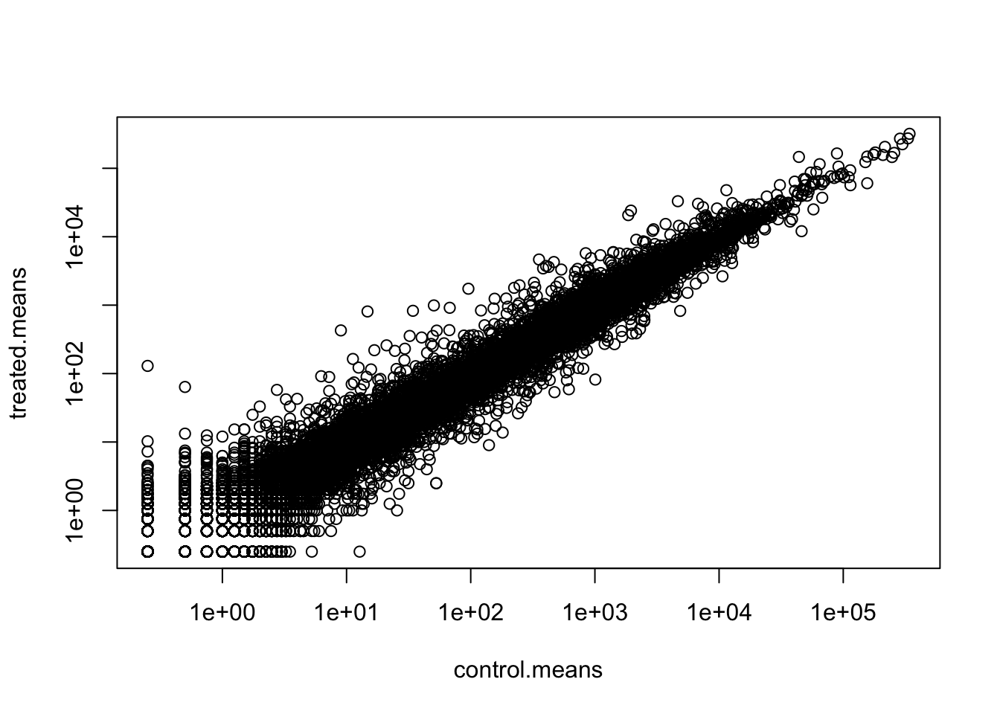

library(BiocManager)Bioconductor version '3.16' is out-of-date; the current release version '3.17'
is available with R version '4.3'; see https://bioconductor.org/installlibrary(BiocManager)Bioconductor version '3.16' is out-of-date; the current release version '3.17'
is available with R version '4.3'; see https://bioconductor.org/install# For this class, you'll also need DESeq2:
BiocManager::install("DESeq2")Bioconductor version 3.16 (BiocManager 1.30.20), R 4.2.3 (2023-03-15)Warning: package(s) not installed when version(s) same as or greater than current; use
`force = TRUE` to re-install: 'DESeq2'Old packages: 'sys'Here we will use the DESeq2 package for RNASeq analysis. The data for today ’s class come from a study of airway smoothe muscle cells treated with dexamethasone, a synthetic glucocorticoid steroid with anti-inflammatroy effect (himes et al. 2014)
#Import the data
We need two things for this analysis:
-countData (counts for every transcript/gene in each experiment) -colData (metadata that describes the experimental setup)
countData<- read.csv("airway_scaledcounts.csv", row.names=1)
metadata <- read.csv("airway_metadata.csv")
head(countData) SRR1039508 SRR1039509 SRR1039512 SRR1039513 SRR1039516
ENSG00000000003 723 486 904 445 1170
ENSG00000000005 0 0 0 0 0
ENSG00000000419 467 523 616 371 582
ENSG00000000457 347 258 364 237 318
ENSG00000000460 96 81 73 66 118
ENSG00000000938 0 0 1 0 2
SRR1039517 SRR1039520 SRR1039521
ENSG00000000003 1097 806 604
ENSG00000000005 0 0 0
ENSG00000000419 781 417 509
ENSG00000000457 447 330 324
ENSG00000000460 94 102 74
ENSG00000000938 0 0 0metadata id dex celltype geo_id
1 SRR1039508 control N61311 GSM1275862
2 SRR1039509 treated N61311 GSM1275863
3 SRR1039512 control N052611 GSM1275866
4 SRR1039513 treated N052611 GSM1275867
5 SRR1039516 control N080611 GSM1275870
6 SRR1039517 treated N080611 GSM1275871
7 SRR1039520 control N061011 GSM1275874
8 SRR1039521 treated N061011 GSM1275875Q1. How many genes are in this dataset?
nrow(countData)[1] 38694Q2. How many ‘control’ cell lines do we have?
table(metadata$dex)
control treated
4 4 another way is
sum(metadata$dex=="control")[1] 4-Step1 Calculate the mean of the control smaples (ie columns in countData) Calculate the mean of th etreated samples
control.inds <- metadata$dex== "control"countDataand call it control.countscontrol.counts <- countData[ ,control.inds]control.counts ie calculate the mean count values for each gene in the control samples.control.means <- rowMeans(control.counts)
head(control.means)ENSG00000000003 ENSG00000000005 ENSG00000000419 ENSG00000000457 ENSG00000000460
900.75 0.00 520.50 339.75 97.25
ENSG00000000938
0.75 Step 2 Calculate the mean of the treated samples…
treated.inds <- metadata$dex== "treated"
treated.counts <- countData[ ,treated.inds]
treated.means <- rowMeans(treated.counts)
head(treated.means)ENSG00000000003 ENSG00000000005 ENSG00000000419 ENSG00000000457 ENSG00000000460
658.00 0.00 546.00 316.50 78.75
ENSG00000000938
0.00 We now have control and reated mean count values. For ease of book-keeping I will combine these vectors into a new data.frame called meancounts
meancounts <- data.frame(control.means, treated.means)
head(meancounts) control.means treated.means
ENSG00000000003 900.75 658.00
ENSG00000000005 0.00 0.00
ENSG00000000419 520.50 546.00
ENSG00000000457 339.75 316.50
ENSG00000000460 97.25 78.75
ENSG00000000938 0.75 0.00plot(meancounts)
plot(meancounts, log="xy")Warning in xy.coords(x, y, xlabel, ylabel, log): 15032 x values <= 0 omitted
from logarithmic plotWarning in xy.coords(x, y, xlabel, ylabel, log): 15281 y values <= 0 omitted
from logarithmic plot
We use loge transforms for skewed data such as this and because we really care most about relative changes in magnitude.
We most often use log2 as our transform as the math is easier to interpret than log10 or others.
If we have no change- ie same values in control and treated we will have a log2 value of zero
log2(20/20)[1] 0If I have double the amount ie 20 compared to 10
log2(20/10)[1] 1If i have half the amount i will have a log2 fold change of -1
log2(10/20)[1] -1log2(40/10)[1] 2meancounts$log2fc<- log2(meancounts$treated.means/meancounts$control.means)
head(meancounts) control.means treated.means log2fc
ENSG00000000003 900.75 658.00 -0.45303916
ENSG00000000005 0.00 0.00 NaN
ENSG00000000419 520.50 546.00 0.06900279
ENSG00000000457 339.75 316.50 -0.10226805
ENSG00000000460 97.25 78.75 -0.30441833
ENSG00000000938 0.75 0.00 -InfQ. How many genes are up regulated at the common trheshold of +2log2fc values?
sum(meancounts$log2fc>= 2, na.rm=T)[1] 1910Hold on what about the stat! Yes these are big changes but are these changes significant!! to do this properly we will turn to the DESeq2 package.
library(DESeq2)To use DeSeq we need our input contData and colData ina specific format that DESeq want:
dds <- DESeqDataSetFromMatrix(countData=countData, colData = metadata, design = ~dex)converting counts to integer modeWarning in DESeqDataSet(se, design = design, ignoreRank): some variables in
design formula are characters, converting to factorsTo run the analysis I can now use the main DESeq2 function called DESeq2() with dds as input
dds <- DESeq(dds)estimating size factorsestimating dispersionsgene-wise dispersion estimatesmean-dispersion relationshipfinal dispersion estimatesfitting model and testingTo get the results out of this dds object we can use the results() function from the package.
res <- results(dds)
head(res)log2 fold change (MLE): dex treated vs control
Wald test p-value: dex treated vs control
DataFrame with 6 rows and 6 columns
baseMean log2FoldChange lfcSE stat pvalue
<numeric> <numeric> <numeric> <numeric> <numeric>
ENSG00000000003 747.194195 -0.3507030 0.168246 -2.084470 0.0371175
ENSG00000000005 0.000000 NA NA NA NA
ENSG00000000419 520.134160 0.2061078 0.101059 2.039475 0.0414026
ENSG00000000457 322.664844 0.0245269 0.145145 0.168982 0.8658106
ENSG00000000460 87.682625 -0.1471420 0.257007 -0.572521 0.5669691
ENSG00000000938 0.319167 -1.7322890 3.493601 -0.495846 0.6200029
padj
<numeric>
ENSG00000000003 0.163035
ENSG00000000005 NA
ENSG00000000419 0.176032
ENSG00000000457 0.961694
ENSG00000000460 0.815849
ENSG00000000938 NALet’s make a final (for today) plot of log2 fold change vs the adjusted p-value
plot(res$log2FoldChange, res$padj)
It is the low p-values that we care about and these are lost in the skewed plot above. Let’s take the log of the $padj values for our plot
plot(res$log2FoldChange, -log(res$padj))
abline(v=c(+2,-2), col="blue")
abline(h=-log(0.05), col="blue") +plot(res$log2FoldChange, res$padj)

integer(0)Finally we can make a color vector to use in the plot to better highlight the genese we care about
mycols <- rep("gray", nrow(res))
mycols[abs(res$log2FoldChange)>=2] <- "red"
mycols[res$padj>0.05] <- "gray"
plot(res$log2FoldChange, -log(res$padj), col=mycols)
abline(v=c(+2,-2), col="blue")
abline(h=-log(0.05), col="blue") +plot(res$log2FoldChange, res$padj)

integer(0)Done for today
Still to do: - Add annotation (including gene symbols, entrezid and genename) - Save results as CSV file - Do some pathway analysis (KEGG and GO)
We can use the AnnotationDBI package to add annotationd data such as gene identifiers from different sources to our results object.
library("AnnotationDbi")
library("org.Hs.eg.db")We can translate (AKA “map”) between all these database id formats:
columns(org.Hs.eg.db) [1] "ACCNUM" "ALIAS" "ENSEMBL" "ENSEMBLPROT" "ENSEMBLTRANS"
[6] "ENTREZID" "ENZYME" "EVIDENCE" "EVIDENCEALL" "GENENAME"
[11] "GENETYPE" "GO" "GOALL" "IPI" "MAP"
[16] "OMIM" "ONTOLOGY" "ONTOLOGYALL" "PATH" "PFAM"
[21] "PMID" "PROSITE" "REFSEQ" "SYMBOL" "UCSCKG"
[26] "UNIPROT" head(res)log2 fold change (MLE): dex treated vs control
Wald test p-value: dex treated vs control
DataFrame with 6 rows and 6 columns
baseMean log2FoldChange lfcSE stat pvalue
<numeric> <numeric> <numeric> <numeric> <numeric>
ENSG00000000003 747.194195 -0.3507030 0.168246 -2.084470 0.0371175
ENSG00000000005 0.000000 NA NA NA NA
ENSG00000000419 520.134160 0.2061078 0.101059 2.039475 0.0414026
ENSG00000000457 322.664844 0.0245269 0.145145 0.168982 0.8658106
ENSG00000000460 87.682625 -0.1471420 0.257007 -0.572521 0.5669691
ENSG00000000938 0.319167 -1.7322890 3.493601 -0.495846 0.6200029
padj
<numeric>
ENSG00000000003 0.163035
ENSG00000000005 NA
ENSG00000000419 0.176032
ENSG00000000457 0.961694
ENSG00000000460 0.815849
ENSG00000000938 NAMy IDs are stored in
res$symbol <- mapIds(org.Hs.eg.db,
keys=row.names(res), # Our genenames
keytype="ENSEMBL", # The format of our genenames
column="SYMBOL", # The new format we want to add
multiVals="first")'select()' returned 1:many mapping between keys and columnsres$entrez <- mapIds(org.Hs.eg.db,
keys=row.names(res), # Our genenames
keytype="ENSEMBL", # The format of our genenames
column="ENTREZID", # The new format we want to add
multiVals="first")'select()' returned 1:many mapping between keys and columnsres$uniprot <- mapIds(org.Hs.eg.db,
keys=row.names(res), # Our genenames
keytype="ENSEMBL", # The format of our genenames
column="UNIPROT", # The new format we want to add
multiVals="first")'select()' returned 1:many mapping between keys and columnsres$genename <- mapIds(org.Hs.eg.db,
keys=row.names(res), # Our genenames
keytype="ENSEMBL", # The format of our genenames
column="GENENAME", # The new format we want to add
multiVals="first")'select()' returned 1:many mapping between keys and columnswrite.csv(res, file="myresults.csv")We can use the KEGG database of biological pathways to get some more insight into our differentially expressed genes and the kinds of biology they are involved in.
library("pathview")##############################################################################
Pathview is an open source software package distributed under GNU General
Public License version 3 (GPLv3). Details of GPLv3 is available at
http://www.gnu.org/licenses/gpl-3.0.html. Particullary, users are required to
formally cite the original Pathview paper (not just mention it) in publications
or products. For details, do citation("pathview") within R.
The pathview downloads and uses KEGG data. Non-academic uses may require a KEGG
license agreement (details at http://www.kegg.jp/kegg/legal.html).
##############################################################################library("gage")library("gageData")Each element is a character vector of member gene Entrez IDs for a single KEGG pathway.
data(kegg.sets.hs)
# Examine the first 2 pathways in this kegg set for humans
head(kegg.sets.hs, 2)$`hsa00232 Caffeine metabolism`
[1] "10" "1544" "1548" "1549" "1553" "7498" "9"
$`hsa00983 Drug metabolism - other enzymes`
[1] "10" "1066" "10720" "10941" "151531" "1548" "1549" "1551"
[9] "1553" "1576" "1577" "1806" "1807" "1890" "221223" "2990"
[17] "3251" "3614" "3615" "3704" "51733" "54490" "54575" "54576"
[25] "54577" "54578" "54579" "54600" "54657" "54658" "54659" "54963"
[33] "574537" "64816" "7083" "7084" "7172" "7363" "7364" "7365"
[41] "7366" "7367" "7371" "7372" "7378" "7498" "79799" "83549"
[49] "8824" "8833" "9" "978" head(res$entrez)ENSG00000000003 ENSG00000000005 ENSG00000000419 ENSG00000000457 ENSG00000000460
"7105" "64102" "8813" "57147" "55732"
ENSG00000000938
"2268" The main gage() function requires a named vector of fold changes, where the names of the values are the Entrez gene IDs.
Note that we used the mapIDs() function above to obtain Entrez gene IDs (stored in res$entrez) and we have the fold change results from DESeq2 analysis (stored in res$log2FoldChange).
foldchanges = res$log2FoldChange
names(foldchanges) = res$entrez
#this function adds res$entrez id to the foldchanges
head(foldchanges) 7105 64102 8813 57147 55732 2268
-0.35070302 NA 0.20610777 0.02452695 -0.14714205 -1.73228897 # Get the results
keggres = gage(foldchanges, gsets=kegg.sets.hs)attributes(keggres)$names
[1] "greater" "less" "stats" # Look at the first three down (less) pathways
head(keggres$less, 3) p.geomean stat.mean p.val
hsa05332 Graft-versus-host disease 0.0004250461 -3.473346 0.0004250461
hsa04940 Type I diabetes mellitus 0.0017820293 -3.002352 0.0017820293
hsa05310 Asthma 0.0020045888 -3.009050 0.0020045888
q.val set.size exp1
hsa05332 Graft-versus-host disease 0.09053483 40 0.0004250461
hsa04940 Type I diabetes mellitus 0.14232581 42 0.0017820293
hsa05310 Asthma 0.14232581 29 0.0020045888Now ican use the KEGG IDs of these pathways from gage to view our genes on these mapped pathways.
pathview(gene.data=foldchanges, pathway.id="hsa05310")'select()' returned 1:1 mapping between keys and columnsInfo: Working in directory /Users/StaminaSpeed/Desktop/BIMM 143/Class 12 Transcriptomics and the analysis of RNA-Seq dataInfo: Writing image file hsa05310.pathview.png